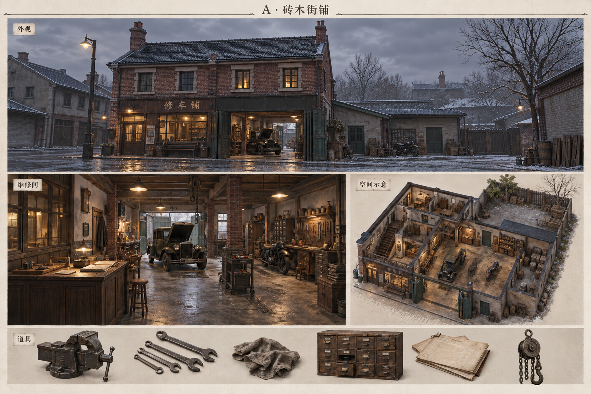
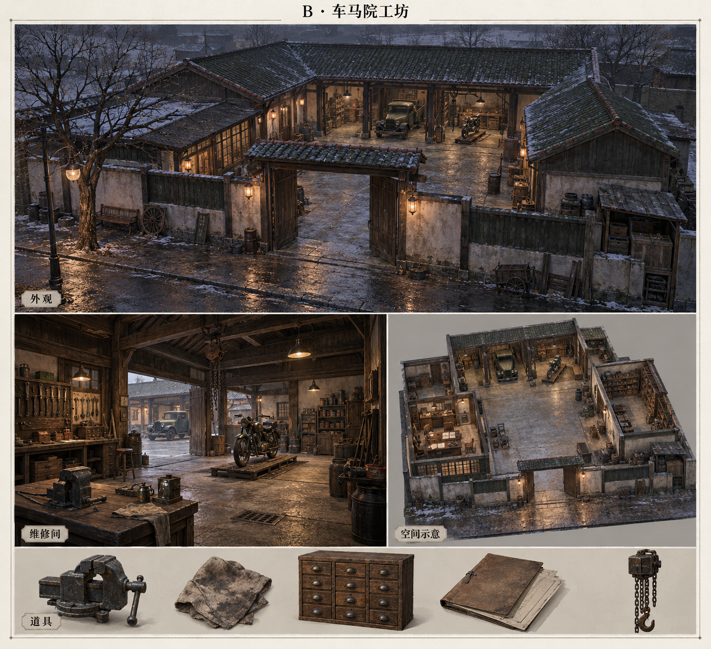
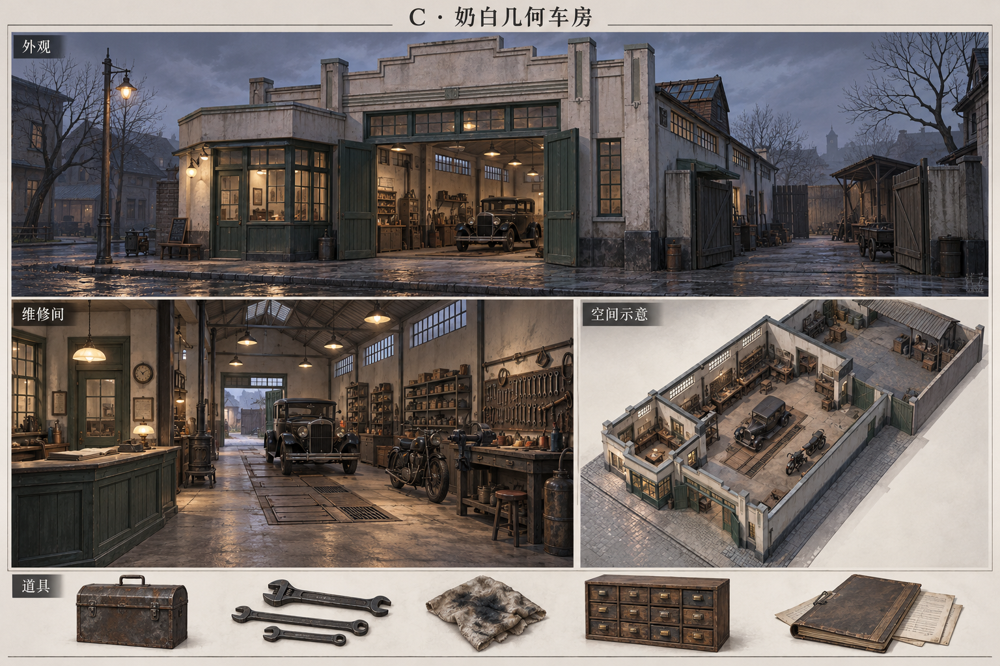
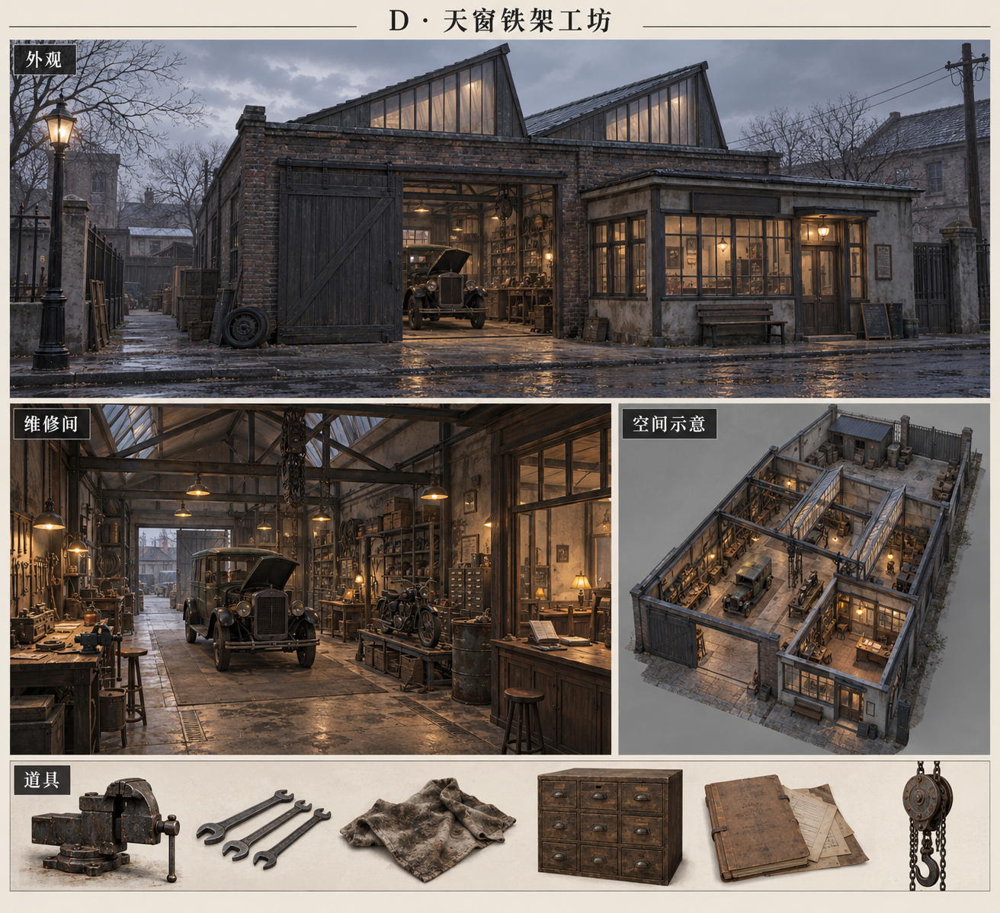
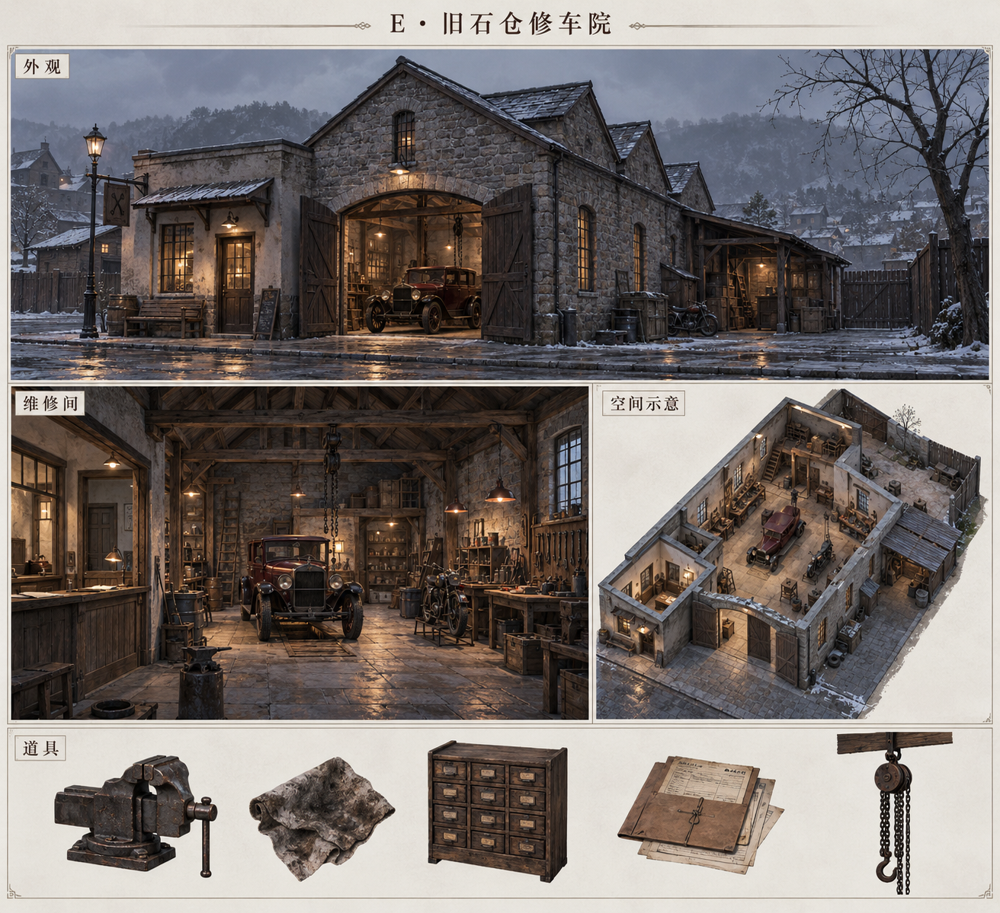

《错日证词》· 修车铺五案
1931 · 维修柜台、客户记录、修车间与后勤院。每案包含外观、室内、去顶空间示意及道具。
A · 砖木街铺 — 沿街商住与手艺生活
B · 车马院工坊 — 露天工作院与深檐维修棚
C · 奶白几何车房 — 明亮单层车间与早期现代几何
D · 天窗铁架工坊 — 工业天窗与铆接结构
E · 旧石仓修车院 — 厚石墙、拱车门与木桁架
概念多视图需在后续建模时用统一布局核对。纸张、时钟与天气只表达美术氛围；线索内容与历史事实仍以剧本为准。